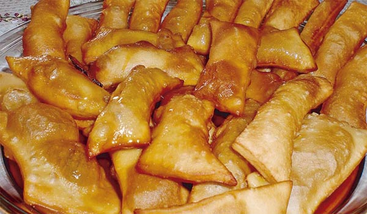

Comete la Ciudad
Es bueno experimentar con algo un poco más desafiante


llauchas
20 de Noviembre 2018
Ingredientes
Ingredientes para la masa:
- 1/4 taza agua tibia
- 1/2 cda azúcar
- 1 cda levadura fresca
- 1/2 taza agua tibia
- 1/2 cdts sal
- 2 cdas manteca
- 2 tazas harina
- carroceria
- carroceria
Ingredientes para la masa:
- 1 1/2 agua
- 1/2 cdts sal
- 1 cda manteca
- 1/2 cda ají colorado molido
- 1 taza agua fría
- 1/2 taza harina
- 1 1/2 queso semi raspado o queso fresco deshecho
Empezamos la masa: Poner la levadura en 1/4 taza de agua tibia con el azúcar, cuando se deshaga, poner la 1/2 taza de agua tibia, sal manteca y harina, amasar muy bien y bastante, cortar la masa en 15 bolitas y dejar reposar hasta preparar el relleno
Empezamos el relleno: poner a fuego suave una olla con el agua, sal, manteca y ají. Diluir en el agua fría la harina con esta mezcla espesar la anterior, siempre a fuego suave, moviendo constantemente con una cuchara de madera, para que no se haga grumos.
Dejar hervir por diez minutos, sacar del fuego, dejar enfriar y mezclar con el queso.
Hacer cada bolita de masa en un redondel del tamaño de un platillo de te, poner en medio una cucharada de relleno, cerrar muy bien, y repulgar.
Ponerlas en latas de horno enmantecadas y pasar un poco de relleno por encima, hornear a fuego fuerte por 20 minutos o hasta que estén doradas.

Lo mas deli de LA PAZ mmm ya quiero viajar

Que rico yo tanvien quiero unos cuantos pero tanvien vivo en Argentina solo antojarse no mas
Casi lloro del antojito...como las extraño.
Tawa Tawas
20 de Noviembre 2018
Ingredientes
- 2 tazas de harina cernida
- ½ cucharilla de sal
- 1 cucharilla de azúcar
- 4 cucharadas colmadas de manteca tibia
- Agua
Mezclar la harina, sal y azúcar, hacer un hoyo al centro y poner la manteca derretida, mezclar.
Alternar poco a poco el agua hasta formar una masa suave.
Estirar la masa sobre una mesa enharinada, de ½ centímetro de alto y cortarla en pedazos largos.
Calentar bien la manteca y freir las masas poco a poco.
Son bolivianas.. ricas tawa tawas de Potosí .. su apelativo viene del número 4 -tawa- que en la cosmovisión andina representa un número sagrado. por eso su formita con 4 puntas y lados haciendo un rombito. Viva Bolivia y su rica cocina.